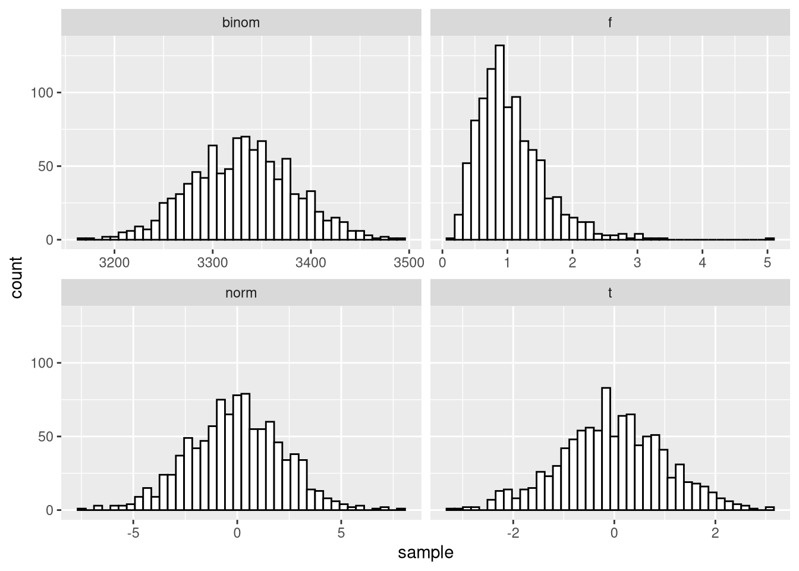

Zufallswerte
Mit R kann man sehr einfach quasi-zufällige2 Wertreihen erstellen. Aus der Veranstaltung letztes Semester kennen wir ja schon die Funktion sample, die aus einer vorgegebenen Urne ziehen kann.
Für unsere Simulations-Probleme gibt es noch eine andere Reihe an Funktionen, die für eine feste Verteilungsklasse zufällige Wertfolgen erstellen können.
Diese Funktionen werden mit einem r für random und der Verteilungsklasse aufgerufen. Eine Übersicht der implementierten Verteilungen kann man mit ?Distributions aufrufen.
Mit diesen Funktionen können wir uns zum Beispiel jeweils 1000 zufällige Werte aus einer \(N(0,5)-\), einer \(B(20000, 1/6)-\), einer \(t(50)\)- und einer \(F(12,36)-\)Verteilung ziehen und in Histogrammen darstellen:
library(tidyverse)
set.seed(42)
tibble(norm = rnorm(1000,mean = 0,sd = sqrt(5)),
binom = rbinom(1000, size = 20000,prob = 1/6),
t = rt(1000,df = 50),
f = rf(1000,df1 = 12,df2 = 36)) %>%
pivot_longer(everything(),
names_to = 'dist',
values_to = 'sample') %>%
ggplot(aes(x = sample)) +
geom_histogram(fill = 'white',
color = 'black',
bins = 40) +
facet_wrap(~dist,scales = 'free_x')
Aufgabe
Erstelle eine Funktion gen_distributed_values, die mit Hilfe von if-Statements anhand eines Arguments distribution und eines Arguments n einen Vektor an Zufallszahlen generiert. Dabei soll distribution angeben, welche aus drei möglichen Verteilungen genutzt wird. Denke außerdem an mögliche Verteilungseigenschaften der genutzten Funktionen und füge sie als optionale Argumente zur Funktion hinzu.
Antwort
gen_distributed_values <- function(distribution,
n,
df = 1,
lambda = 25,
rate = 5) {
if(distribution == 't'){
return(rt(n, df))
}else if(distribution == 'pois'){
return(rpois(n, lambda))
}else if(distribution == 'exp'){
return(rexp(n, rate))
}
print('Distribution is not implemented, returning zeros')
return(numeric(n))
}
gen_distributed_values('pois',
5,
lambda = 3)## [1] 4 4 3 5 2Es ist für einen Rechner sehr schwierig, wahren Zufall zu erzeugen. Auf der Hilfeseite
?Randomkann man sich eine Liste der Algorithmen anschauen, die R zur Generation quasi-zufälliger Wertfolgen nutzt. Diese nicht-wirklich-zufällige Natur der Wertfolgen hat aber auch den Vorteil, dass wir “zufällige” Ergebnisse reproduzierbar machen können. mitset.seed()können wir einen Startwert für die Zufalls-Generation festlegen, den andere R-Nutzer dann auch wählen können.↩︎